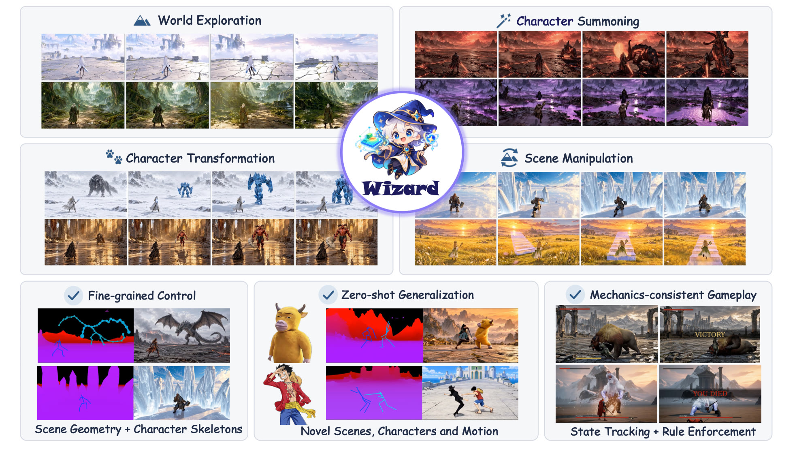
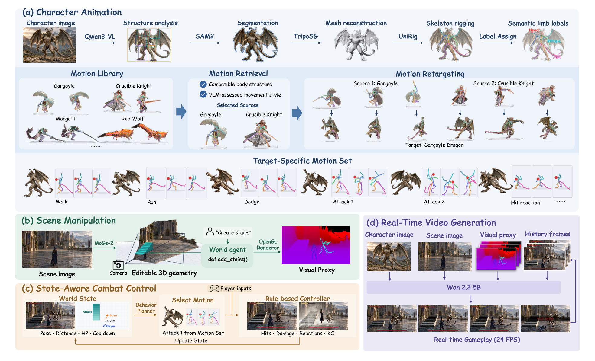
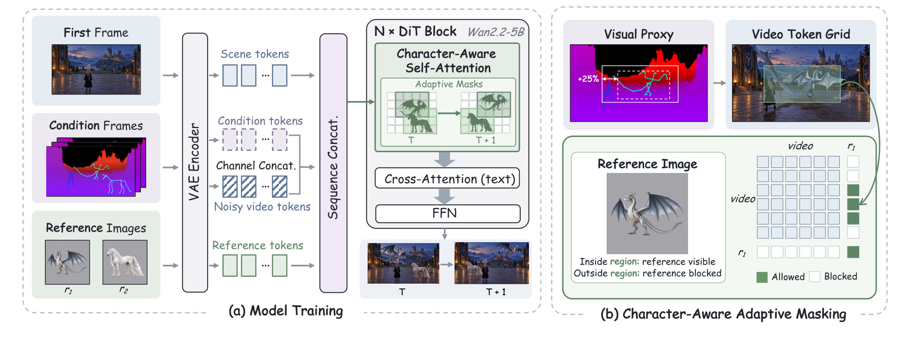
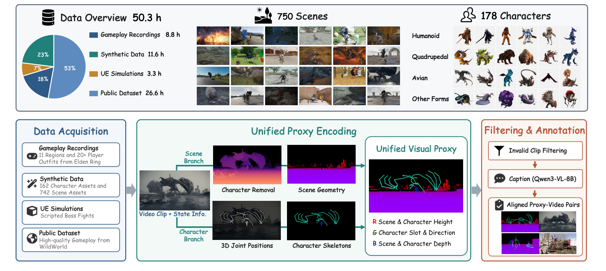

Change the world as you play.
Game world models can generate interactive video in real time, but a game needs more than walking around: a boss that appears and fights by its own rules, a creature that turns into another, ground that splits or rises on command. Wizard keeps the game state explicit: scene geometry for the world, an articulated skeleton for every character, and rules for the fight. Agents edit that state from one image, a typed instruction or a key press; a causal video model renders it at 24 FPS. Every scene and character on this page is new to the model.

Four ways to play
Swipe or use the arrows. Each clip comes with the inputs that made it; click it to watch large.
Choose how the world changes
Pick a spell. The world agent writes a short program over geometric operators and the next proxy frame carries the change. Drag across the frame to compare the video with its proxy.
Agents keep the state. The model paints it.
A setup stage of under five minutes reconstructs the scene and characters, rigs skeletons and builds each character's motion set. During play, the framework updates motion, geometry and combat state, and the generator renders them.

(a)Character animation
Qwen3-VL infers body structure; SAM2, TripoSG and UniRig give a labelled skeleton. Motions from CombatMotion, WildWorld and Elden Ring are retrieved by body structure and style, then retargeted limb chain by limb chain.
(b)Scene manipulation
MoGe-2 recovers geometry and camera. An OpenGL renderer draws the proxy, and Qwen3-VL-8B turns instructions into programs over geometric operators, from raising a platform to turning the world upside down.
(c)State-aware combat
The state tracks positions, poses, health, action phases and cooldowns. A planner simulates candidate attacks; a rule-based controller resolves hits, damage, reactions and knock-outs.
(d)Real-time generation
Wan2.2-TI2V-5B renders the proxies conditioned on the first frame, one reference per character and the retained history, at 24 FPS with two denoising steps.

MaskingCharacter-aware adaptive masking
Each reference may attend only to its own character's skeleton-derived region, expanded by 25%. The masks follow the characters and reduce appearance leakage; on a transformation they block the old identity's cached tokens while the background and first-frame sink stay visible.
SpeedCausal adaptation and distillation
Following Causal Forcing++: teacher forcing, consistency distillation with a 20-latent-frame window and a first-frame sink, then DMD on the student's own rollouts. Proxy conditions and gated references stay active throughout.
50.3 hours of proxy–video pairs
Four sources, each adding what the others lack: diverse creature bodies, controlled synthetic events, real game footage and exact scripted fights.

| Source | Adds | Hours |
|---|---|---|
| WildWorld | diverse creature bodies, with skeleton and depth | 26.6 |
| Synthetic | 162 characters, 742 scenes; entry, coexistence, re-appearance, rapid turns | 11.6 |
| Elden Ring recordings | 11 regions, 20+ outfits, six bosses | 8.8 |
| UE simulations | scripted boss fights with exact proxies | 3.3 |
| Total | 750 scenes · 178 characters | 50.3 |
More worlds
Hover to preview, click to watch.
- Characters with uncommon body structures can lack compatible motions in the library.
- Consistency between scene proxies and the generated video can decline over long rollouts.
@article{wu2026wizard,
title = {Wizard: Manipulate Any World in Real Time via Agentic Control},
author = {Wu, Yuzhe and Lin, Zijun and Jin, Yeying},
journal = {arXiv preprint},
year = {2026}
}